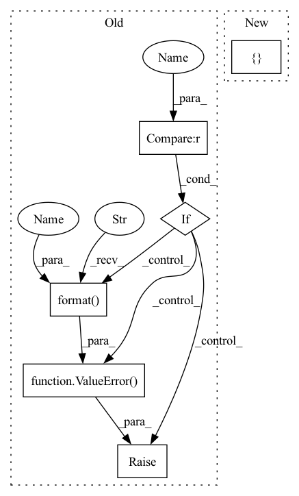

Pattern ID :2119

Before Change
end_net.append(nn.Conv1d(hidden_channels, out_channels, kernel_size=1, stride=1, bias=False))
if output_nonlinear is not None:
if output_nonlinear == "tanh":
end_net.append(nn.Tanh())
elif output_nonlinear == "softmax":
end_net.append(nn.Softmax(dim=1))
else:
raise ValueError("Not support {}".format(output_nonlinear))
self.end_net = nn.Sequential(*end_net)
def forward(self, input, enc_h=None):
After Change
"dim": 1
}
else:
kwargs = {}
module = choose_nonlinear(output_nonlinear, **kwargs)
end_net.append(module)
In pattern: SUPERPATTERN
Frequency: 3
Non-data size: 6
Instances
Fragment ID: 4931875
Project Name: tky823/dnn-based_source_separation
Commit Name: 10282099ca12b94e9b9870841d4de0252506baab
Time: 2021-12-05
Author: delta9guitar97@gmail.com
File Name: src/models/wavenet.py
Class Name: WaveNet
Method Name: __init__
Parent Class: nn.Module
Fragment ID: 4931874
Project Name: shinya7y/universenet
Commit Name: b5431092505f7dcd7de616c8a79eba4d2532fbc8
Time: 2020-02-21
Author: 1155098160@link.cuhk.edu.hk
File Name: mmdet/models/mask_heads/fcn_mask_head.py
Class Name: FCNMaskHead
Method Name: __init__
Parent Class: nn.Module
Fragment ID: 4931876
Project Name: tky823/dnn-based_source_separation
Commit Name: 10282099ca12b94e9b9870841d4de0252506baab
Time: 2021-12-05
Author: delta9guitar97@gmail.com
File Name: src/models/wavenet.py
Class Name: WaveNet
Method Name: __init__
Parent Class: nn.Module